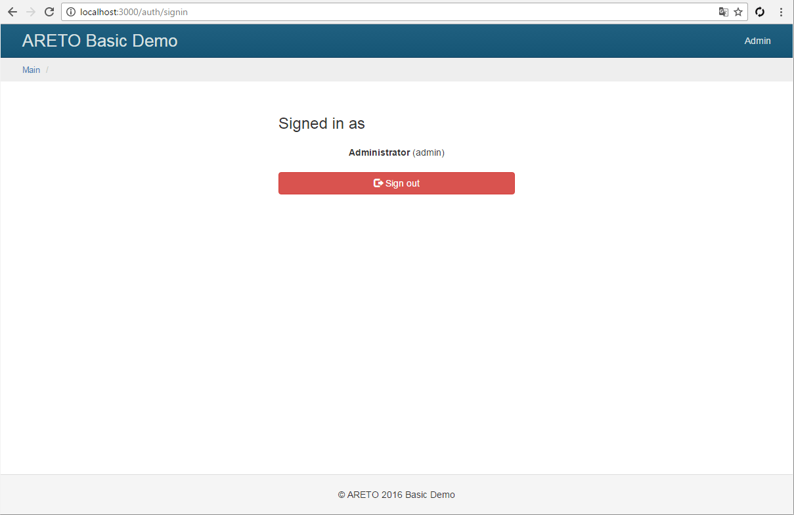

Access control
Areto Framework uses RBAC (role based access control) system of access rights.

The following is an example of RBAC concept to remove a article.
First, create deleteArticle permission that describes protected functionality.
Create editor role that will be assigned to a user.
Add deleteArticle permission to role children.
To catch a user attempt to delete an article, add check for the deleteArticle permission
in controller's action.
Add rbac component in the application configuration.
Its implementation is contained in areto/rbac/Manager class.
config/default.js
By default file storage is used to keep the access settings.
Create rbac/items file with a list of roles and permissions.
A role may inherit a permission and other roles.
A permission can not inherit any role.
The updateOwnArticle permission closed by author rule.
It protect an article from updates by anyone except the author.
Add updateArticle permission and assign it to the role of blog editor to update any article.
Roles contain a typical hierarchy of blog users:
reader- can view objects.author- inheritsreaderpermissions and can edit their own articles.editor- inheritsauthorpermissions, and also can edit any article.moderator- inheritsauthorpermissions, and can also edit any comments.admin- inheritseditor, moderatorpermissions.
rbac/items.js
The rbac/rules file contains rules for permissions (and roles).
Rule locks a permission and opens only after access checks.
The author rule permits access only to the author of object.
rbac/rules.js
The rbac/assignments file contains users with assigned roles.
In this case, the file is empty, because a user role is stored in role attribute of a user model.
It is overridden in getAssignments method of model/User class.
rbac/assignments.js